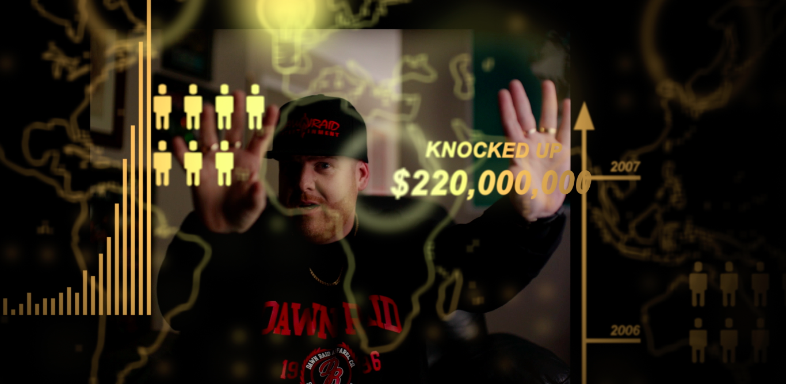
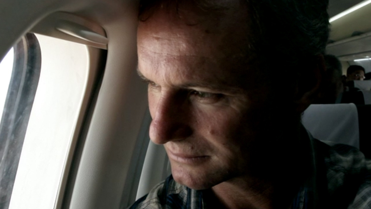
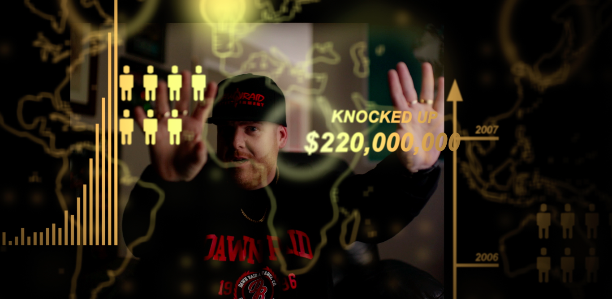
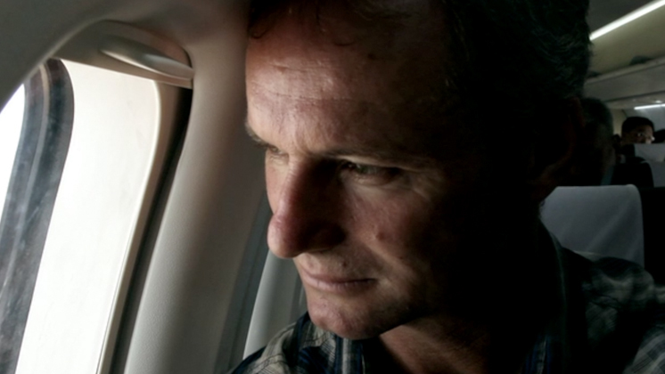

James Brown
Documentary Director / Editor
Over the past 20 years I have edited for many of New Zealand's top documentary directors and producers - Leanne Pooley, Annie Goldson, Cass Avery, Oskar Kightly, Roger Donaldson, Pietra Brettkelly, Justin Pemberton, Matthew Metcalfe and many others.
In 2013 I was awarded the New Zealand Film Award (Moa) for Best Documentary Editor with director Annie Goldson, and in 2020 I recieved the New Zealand Television Award for Best Editing: Documentary / Factual with co-editor Prisca Bouchet (This year I am nominated again! Fingers crossed).
As a director I have been fortunate to be able to shoot all over the world primarily on my long form series "An American Rugby Odyssey" which has been filmed in New Zealand, USA, China, UK, Europe, Japan, Brazil, Fiji and Tanzania.
Filmgraphy
-
THE CHOIR GAMES
Editor
4 Part Documentary Series (Sky Open)
Spacific
-
ALL BLACKS: IN THEIR OWN WORDS II
Editor
4 Part Documentary Series (NZR+)
Whisper Films
-
AN AMERICAN RUGBY ODYSSEY—STUDENT CUT
Director / Mentor / Camera / Editor / Online Editor
Documentary Episode
Inner City Education Foundation
-
ALL BLACKS: IN THEIR OWN WORDS
Editor
4 Part Documentary Series (NZR+)
Whisper Films
-
HOME, LAND AND SEA
Editor
Documentary Episode (TVNZ)
Jack Films
-
BLACK COAST VANISHINGS
Editor
4 Part Documentary Series (Discovery)
Augusto
NOMINATED: BEST EDITING: DOCUMENTARY / FACTUAL (NZ Film & TV Awards)
-
THE SEEKER
Director / Editor
Short Film
Rocketwerkz
-
UNDISCLOSED PROJECT
Editor
Documentary Series (Streaming)
Augusto
-
LIVE TO LEAD
Editor (3 Episodes) / Advisory Editor
8 Part Documentary Series (Netflix)
Blackwell & Ruth / Nelson Mandela Foundation
-
FIGHTBACK: JOSEPH PARKER
Primary Editor
Documentary (DAZN)
Spacific -
AN AMERICAN RUGBY ODYSSEY
Director / Camera / Editor / Online Editor
8 Part Documentary Series (Fox Sports)
Inner City Education Foundation -
SECOND CHANCE CHARLIE
Primary Editor
16 Part Short Documentary Series (TV3)
Mediaworks -
DAWN RAID
Editor / Motion Graphics
Feature Documentary (Theatrical)
GFC -
FUNNY AS: THE STORY OF NEW ZEALAND COMEDY
Primary Editor
5 Part Documentary Series (TVNZ)
Augusto
BEST EDITING: DOCUMENTARY / FACTUAL (NZ Film & TV Awards)
-
WE NEED TO TALK ABOUT AI
Additonal-Editor
Feature Documentary (Theatrical)
GFC -
WAYNE
Editor
Feature Documentary
GFC -
CAPITAL IN THE 21ST CENTURY
Additional-Editor
Feature Documentary (Theatrical)
GFC -
ANOTHER RED, WHITE, BLACK & BLUE ODYSSEY
Director / Camera / Editor / Online Editor
Feature Documentary (PAFF)
Inner City Education Foundation
-
RED, WHITE, BLACK & BLUE ODYSSEY
Director / Camera / Editor / Online Editor
Feature Documentary (Netflix)
Inner City Education Foundation
-
MCLAREN
Editor
Feature Documentary (Theatrical)
GFC
-
DOG'S BEST FRIEND
Editor
Feature Documentary (NZIFF)
Dir. Eryn Wilson
-
DRUG COURT
Editor
Documentary (Maori TV)
Notable Films
-
RED, WHITE, BLACK & BLUE III
Director / Editor
Documentary (PAFF)
Inner City Education Foundation
-
HE TOKI HUNA: NZ IN AFGHANISTAN
Editor
Documentary (NZIFF)
Occasional Productions
BEST DOCUMENTARY EDITING (NZ Film Awards / Moas)
-
RED, WHITE, BLACK & BLUE II
Director / Editor
Documentary (PAFF)
Inner City Education Foundation
-
SOUL IN THE SEA
Online Editor
Documentary (NZIFF)
Dir. Amy Taylor
-
RED, WHITE, BLACK & BLUE
Director / Editor
Feature Documentary (DocNZ, PAFF, ICF, AFF)
Occassional Productions
BEST DOCUMENTARY EDITING (Amsterdam Film Festival)
-
BROTHER NUMBER ONE
Editor
Feature Documentary (IDFA, HRFF, MIFF, NZIFF)
Occassional Productions
-
THE CREATIVE ADVENTURES OF JAMES BROWN
Editor
20 Part Short Documentary Series (Web: The Big Idea)
The Learning Connexion
-
SOUTH AUCKLAND POETS' COLLECTIVE
Editor
Short Documentary
Sunyard
-
FIGHTING FOR PAY EQUITY
Editor
Short Documentary
Human Rights Commission
-
MSANII: ARTISTS OF BAGAMOYO
Director / Camera / Editor
Documentary
The Learning Connexion
-
ART IN THE FREEZER
Editor
Documentary (TV3)
The Learning Connexion
-
THE PECULIAR INVENTION OF DAVID ASPIRING
Director / Camera / Editor
16mm Featurette
Self-funded
2024
I'm working on my long-running series following rugby scholars on various international tours, taking on a mentoring role, helping the students document their own experiences.
2023
2022
2021
2020
2019
2018
2017
2016
2015
2014
2013
2012
BEST DOCUMENTARY (Idylwild Cinema Fest)
BEST DOCUMENTARY (Raglan Arts Film Festival)
RISING STAR AWARD (Canada Film Awards)
I WANT TO WALK WITH MY MOKO
Editor
Documentary (Web: The Health Commission)
FarmerClark
2011
2010
2009
2008
2007
2004-6
During this period I worked full time directing and editing educational art documentaries for The Learning Connexion, as well as music videos, short films and corporate videos.

 


